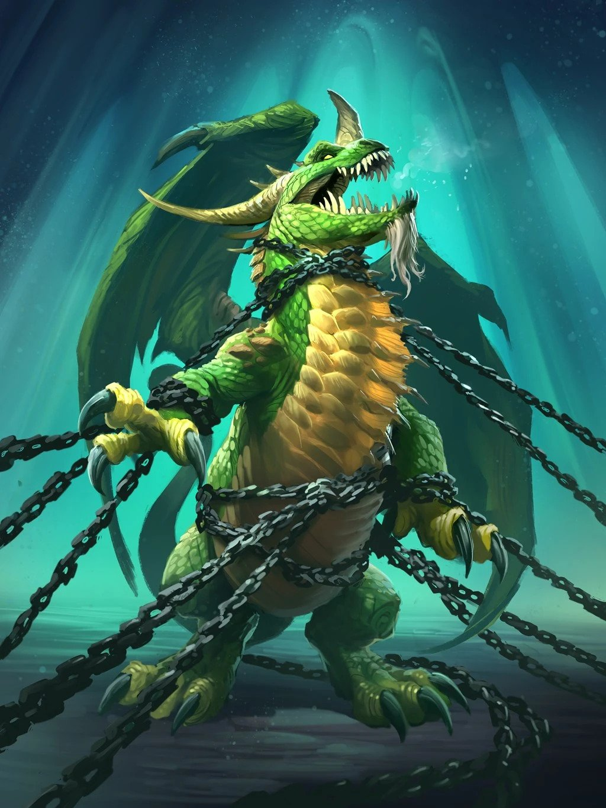

Valithria Dreamwalker
| Valithria Dreamwalker | |
|---|---|
|  | |
| Race | Green Dragon (Dragonkin)" |
| Level | ?? Boss |
| Reaction | Alliance/Horde |
| Loction | Frostwing Hall(Icecrown Citidel) |
| Status | Alive |
{kind=link}
Valithria Dreamwalker " is the first encounter in the Frostwing Halls wing inside Icecrown Citadel. She is a Green Dragon that was captured and held prisoner by the Scourge. This fight ends when Valithria is healed up to 100% health, all the while adds spawn in decreasing intervals.
-
1.
Abilities
- 1.1 Valithria
- 1.2 Blazing Skeleton
- 1.3 Blistering Zombie
- 1.4 Risen Archmage
-
1.5
Gluttonous Abomination
- 1.5.1 Rot Worm
- 1.6 Suppressor
-
2.
Setup
- 2.1 Positioning
- 2.2 Add portal groups
- 2.3 Class Specific Tips
- 2.4 Dream Portals
- 2.5 Strategy
- 2.6 Heroic Mode
Abilities
Valithria
- Summon Nightmare Portal - Summons a Nightmare Portal to allow players access to the Dreamstate, where Dream Clouds spawn.
- Emerald Vigor - Regenerating 200 Mana every 3 sec. Increases Damage done by 10%. Increases Healing done by 10%. This is a stacking buff that is applied to a player whenever they kill a Dream Cloud in Valithria's dream state.
- Dreamwalker's Rage - Deals 10,000,000 Nature damage to all surrounding enemies. 3 sec cast. Cast after reaching full health. Will not hit players.
Blazing Skeleton
- Fireball - Inflicts 4,713 to 5,287 Fire damage to an enemy.
- Lay Waste - Surrounds the caster in flames for 12 sec, pulsing 3770 to 4230 Fire damage to all enemies every 2 sec. ( 4713-5287 on Heroic)
Blistering Zombie
- Acid Burst - The caster explodes, dealing 9425 to 10575 Nature damage instantly and 750 Nature damage per second to all enemies within 15 yards.
- Corrosion - Whenever the caster lands a melee swing, the target takes 2000 Nature damage every 3 seconds and their armor is reduced by 10%. This effect can stack up to 5 times. Lasts 6 sec.
Risen Archmage
- Column of Frost - Marks the location under a random player target. After 2 seconds a column of frost erupts from this location, dealing 11310 to 12690 Frost damage to all enemies within 3 yards, knocking them into the air. Instant. 3 yd radius. 14138-15862 on Heroic.
- Frostbolt Volley - Inflicts 8550 to 10450 Frost damage to nearby enemies, reducing their movement speed for 4 sec. 1.5 sec cast. 200 yard radius. 10800-13200 on Heroic (8 sec cooldown) (This can be interrupted, as well as dispelled.)
- Mana Void - Summons a Mana Void at a random enemies location. This Mana Void burns 800 mana per second to all enemies within a 6 yard radius. Lasts 30 seconds. Instant. 1000 mana on Heroic
Gluttonous Abomination
- Gut Spray - Deals 2000 Nature damage per second and increases Physical damage taken by 25% for 12 sec.
- Spawn Rot Worms - Spawns 8 to 10 Rot Worms after the abomination dies.
Suppresser
- Suppression - Reduces healing received by the target by 10%.
Setup
Editor Mode: +
test